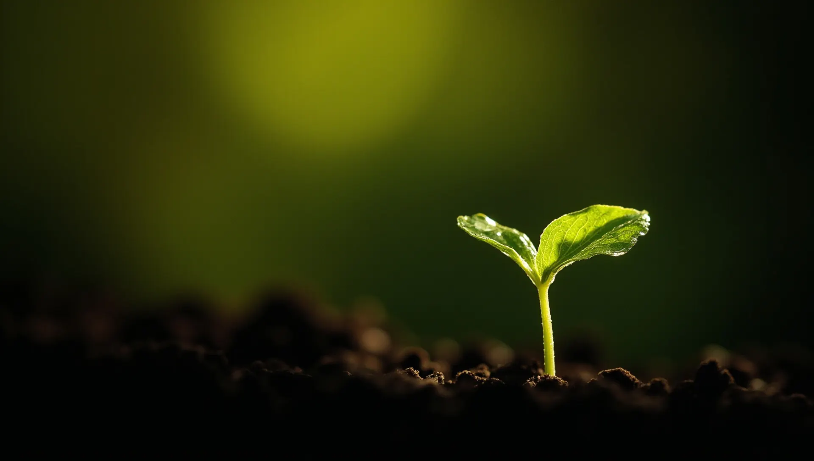
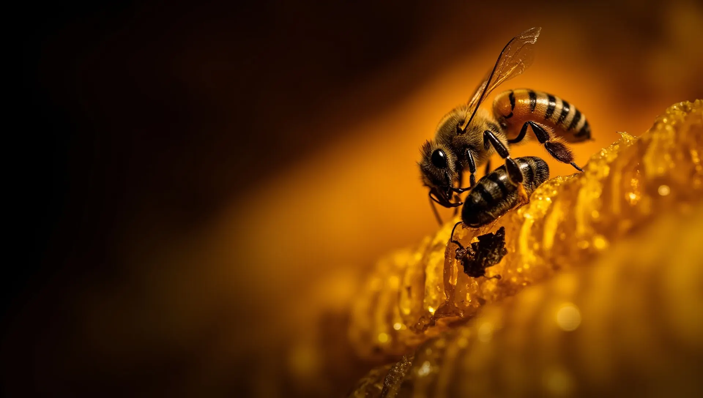
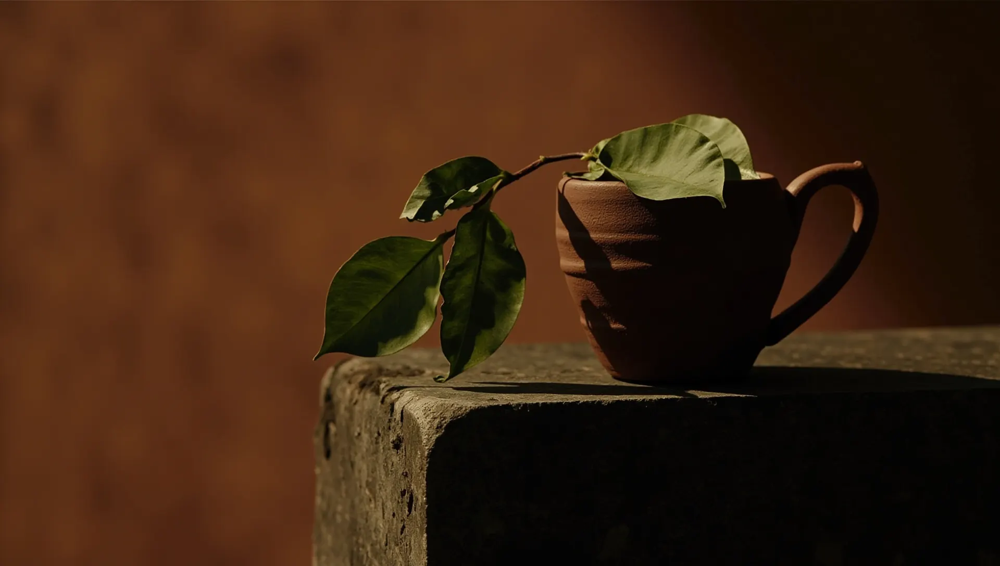
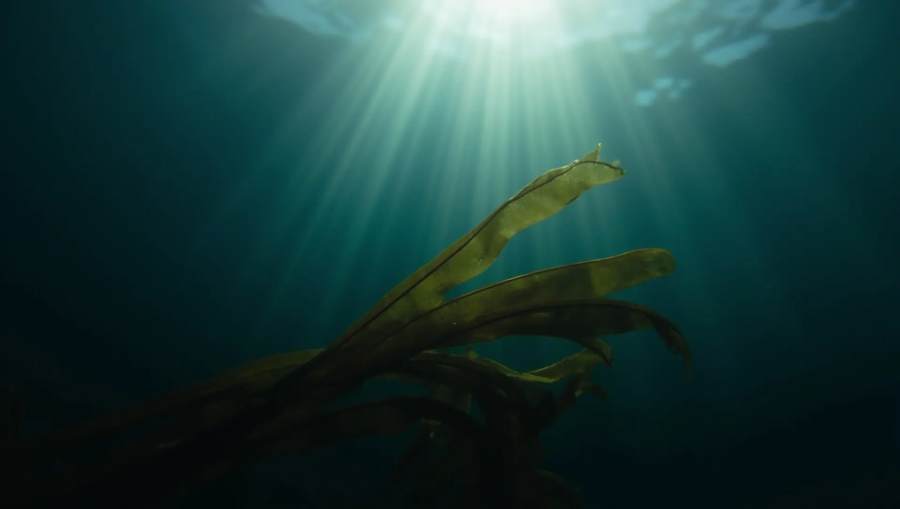
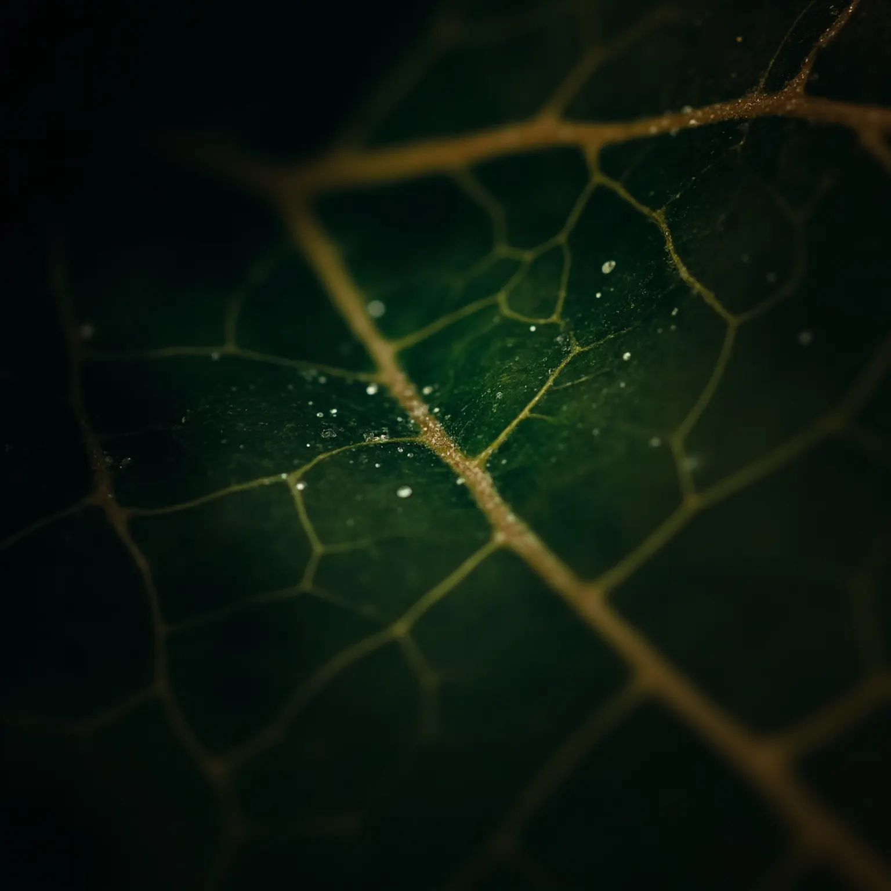
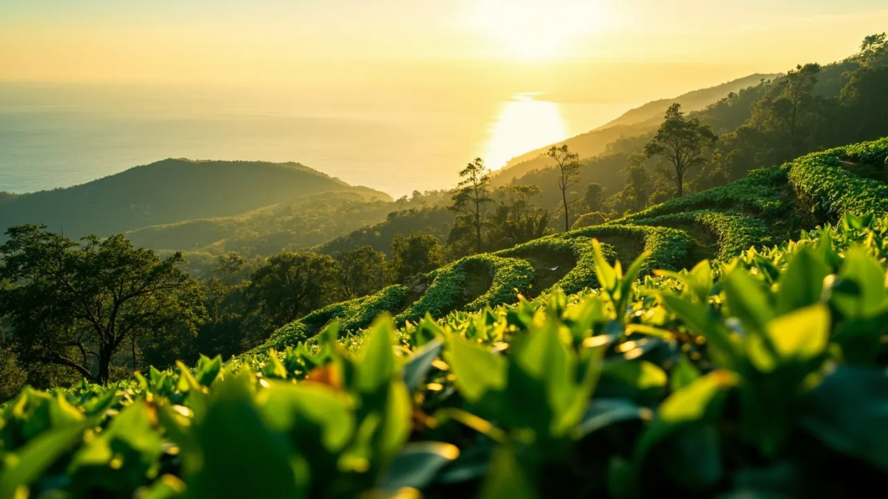
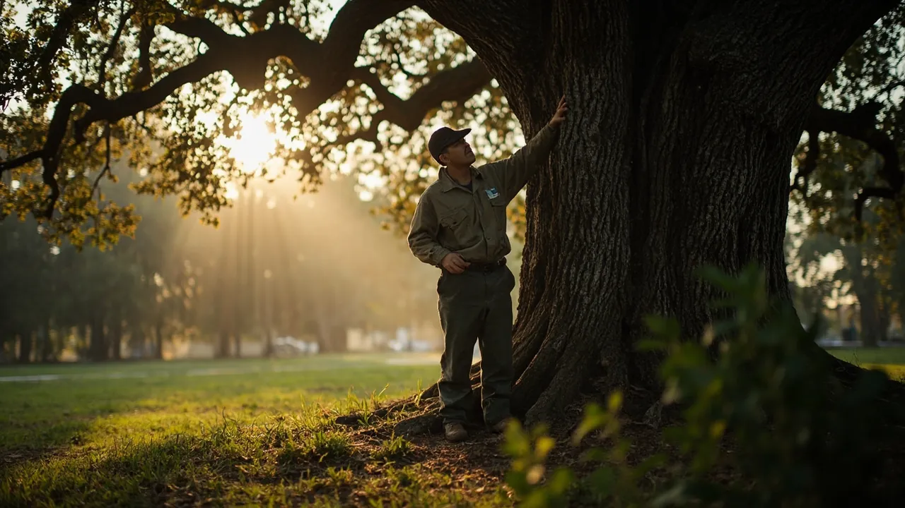

Биозащита без химии
Биопрепараты для сада и огорода, кормовые добавки для пчёл и животных, целебные экзоты из Сочи. Всё, что защищает и лечит, но не травит.
Натуральные средства без химических добавок для сада, огорода, пасеки и дома.
Живая почва, здоровые деревья в парках, чистые водоёмы и пляжи Черноморского побережья.
Экология и здоровье следующих поколений. С 2010 года объединяем тех, кто готов остановить химию.




Что случилось
в саду?
Начните с проблемы, а не с названия препарата. Покажем средства, которые с ней работают. Сомневаетесь? Агроном ответит в мессенджере.
Система
Элис&Тор
Семнадцать препаратов биорациональной защиты, у каждого свой номер. Первая цифра говорит, для кого он: профессионалам, хозяйствам, частным садам или на основе морских водорослей.
Проверено
садом
С 2010 года собираем в одном месте то, что российская наука придумала для защиты растений и животных без химии.

Наука · не магияБольше сорока российских компаний, патентодержателей и производителей препаратов и оборудования продвигают свои разработки вместе с нами. Специалисты выезжают на объекты, проводят обследование и подбирают самые безопасные технологии для людей, животных и растений.
«Предприятиям курортной отрасли, школам и детским садам, сельхозпредприятиям, управляющим компаниям и всем неравнодушным: остановим химию вместе!»

Целебные экзоты
из субтропиков Сочи
Выращиваем редкие для России тропические культуры и делаем из своего сырья тизаны, функциональные купажи, гидролаты и космецевтику по собственным рецептурам.
Контролируем весь цикл выращивания тропических культур.
Сочетания, которые усиливают свойства каждого компонента.
Без синтетических добавок в производстве.
Моринга, гинура, гиностемма, каффир-лайм, саган-дайля.

Лечим деревья,
спасаем пальмы
Обследуем парк, сад или пляж на месте, ставим диагноз и лечим. Для управляющих компаний, санаториев, отелей и частных владельцев.
Вызвать специалистаЧто о нас
говорят
Сертификаты
и декларации
Сертификаты системы менеджмента ISO, декларации соответствия ЕАЭС и свидетельства на товарные знаки СтопХимия и Tropical Life.
Читать
с пользой
Опишите,
что случилось
Пришлите фото листа, коры или улья в мессенджер. Агроном подскажет препарат и норму расхода, а если нужно, приедет на участок.
Сочи,
Воровского, 18
Офис 28 · самовывоз заказов и консультации агронома